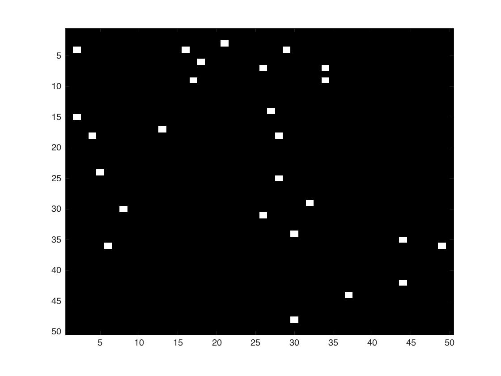
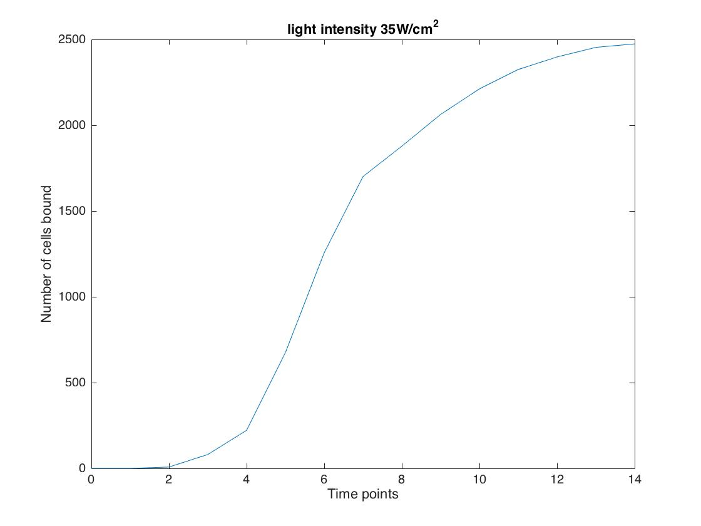
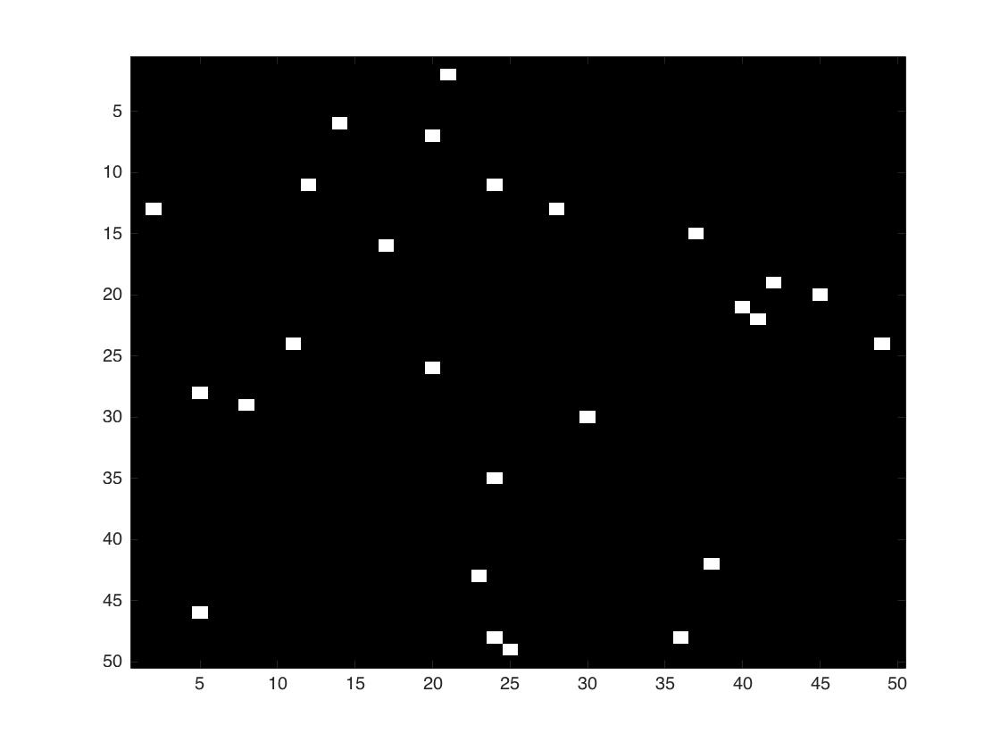
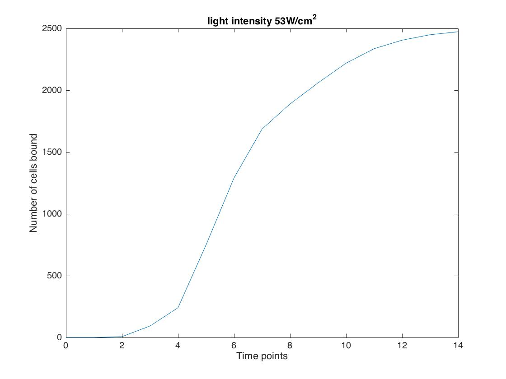
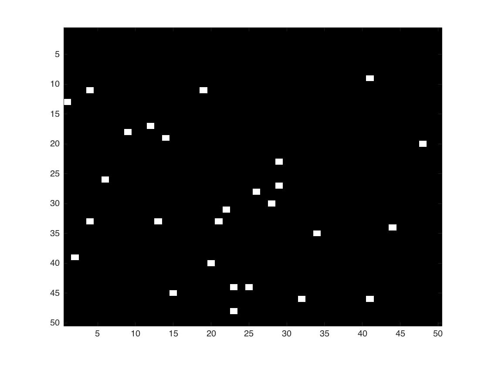
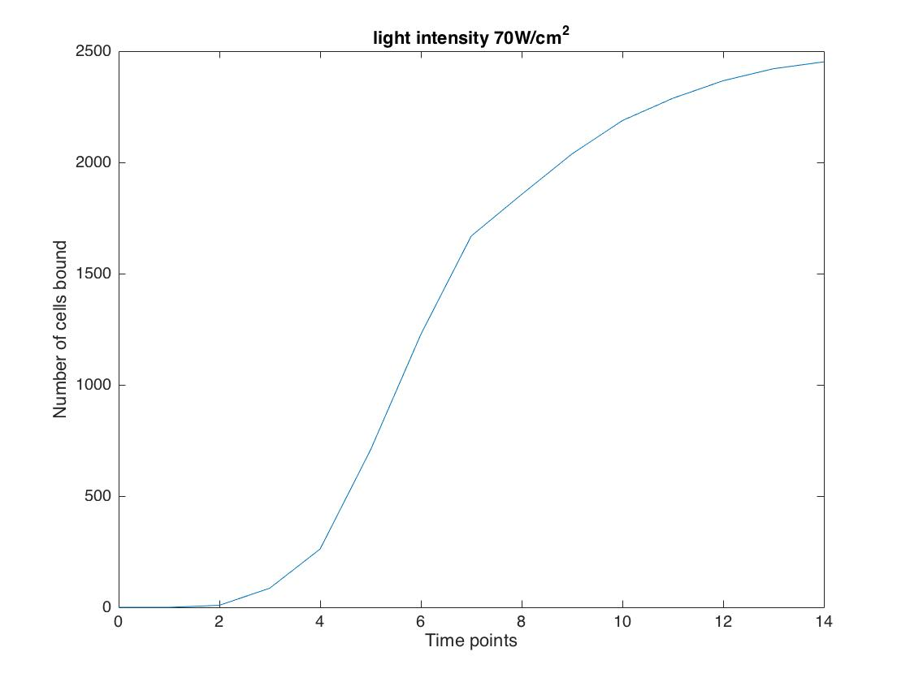
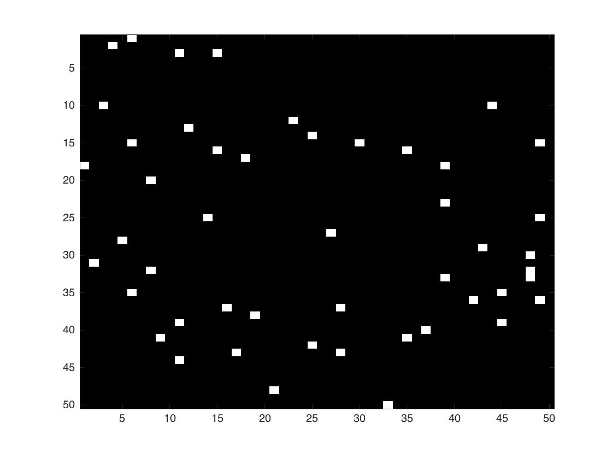
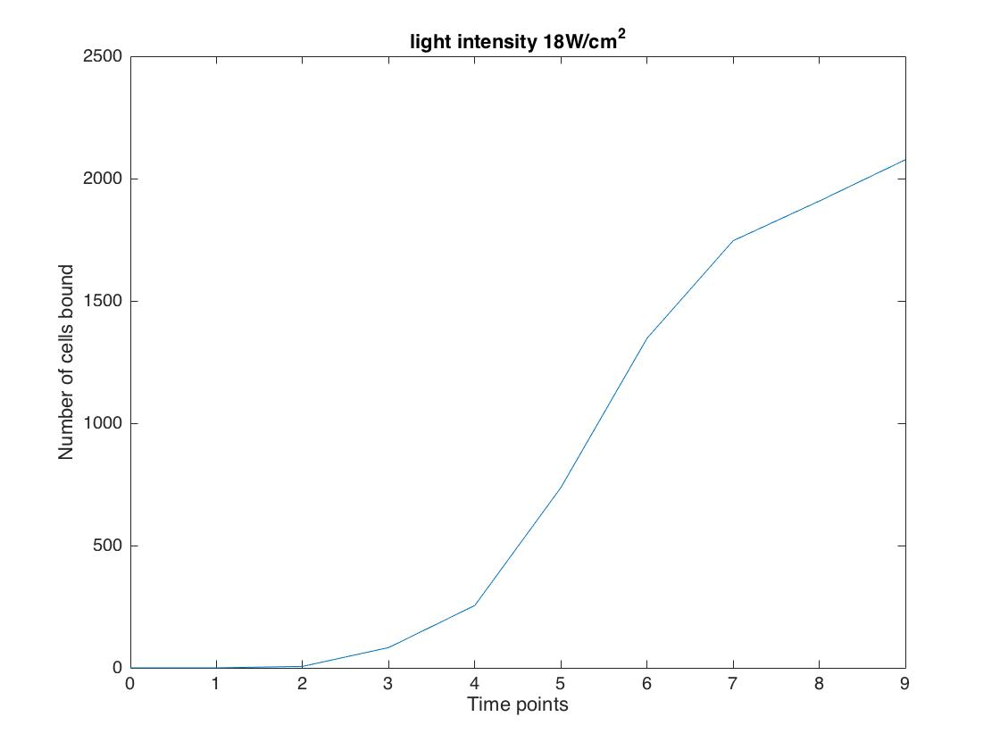
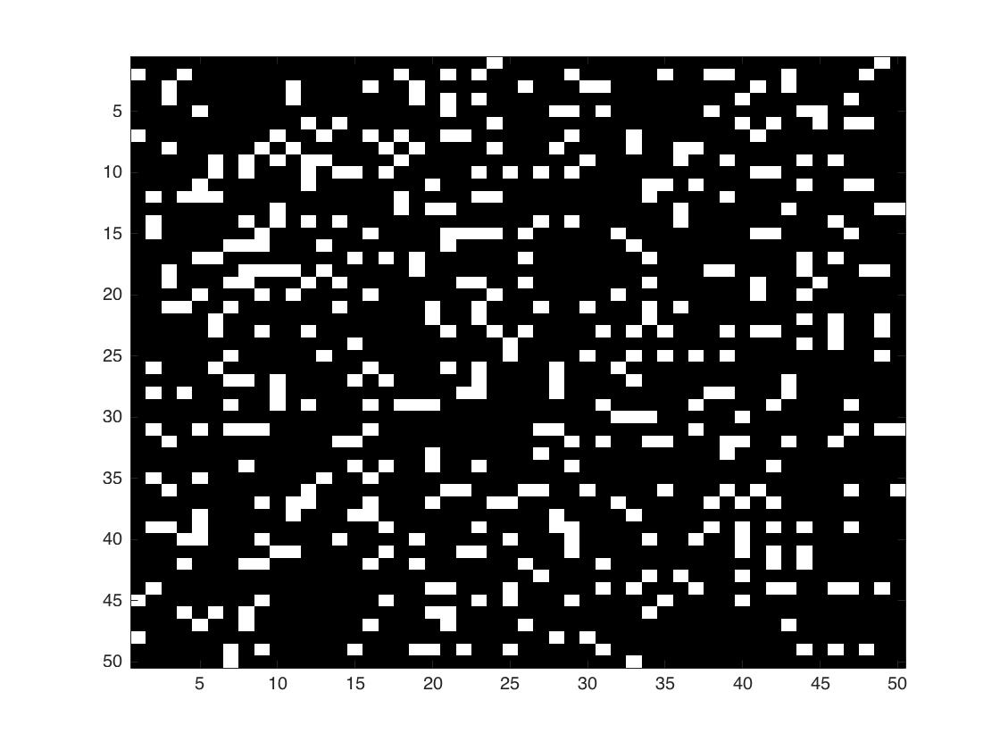

GOLIT - Cell adhesion to form bacterial 3D structures
Cellular automata a different approach to modelling in SynBio
GOLIT is an adapted version of Conway’s ‘Game of Life’ [add link to glossary]. It aims to create a visual representation of how solid cell structures are formed from the binding of SpyTag and SpyCatcher.
- We attempted to optimise the rate at which cell adhesion occurs in the GOLIT model. For this we
introduced a range of novel approaches in the GOLIT model:
- Combination of ordinary differential equations for gene expression and cellular automata for spatial analysis
- Genetic Algorithm for automated parameter optimization
- Experimental data for parameter optimization
What are we modelling?
We are modelling a cellular automaton to dynimically represent the adhesion of cells. Our Wet Lab team is engineering E. coli cells to express the surface protein intimin. The binding partners SpyTag and SpyCatcher are then attached to the surface protin (this expression system is modellied in the LEGIT model). When SpyTag and SpyCatcher come in contact they form a covalent bond and allow cells to aggregate and form bacterial structures. With GOLIT we are simulating the adhesion of these binding partners over time by considering the concentration of cells in a cell culture as well as assessing probabilities depending on specific conditions (described below). In short we are modelling the impact of light on cell adhesion.
[ADD DIAGRAMS ]
How did we adapt the Game of Life?
Similarly to Conway's Game of Life, we are representing the cells on a 2D grid and
the game is updating their state over time.
In the GOLIT model the cells can either be in the “bound” or “unbound” state. The game requires to define the state of all the cells on the grid
and update the grid according to a set of rules after each time point. The state of a cell at particular
time point depends on the the state of its neighboring cells as well as the concentration of SpyTag/
SpyCatcher expressed on the surface of the cells.
The rules below assign probabilities of one cell becoming "bound" depending on the
number of neighbors in the "bound" state it has.
Rules of the Game of LIT
| Number of "bound" neighbors | Probability of binding (%) |
|---|---|
| 0 | 20 |
| 1 | 30 |
| 2 | 60 |
| 3 | 80 |
| 4 | 99 |
Combination of ODE and Cellular Automata
Aim: Determine which light intensity allows the fastest cell aggregation, i.e. binding of SpyTag and SpyCatcher
The particularity of the GOLIT model lies in the combination of rate kinetics for protein expression and cellular
automata for spatial analysis. The concentration of SpyTag and SpyCatcher expressed on the surface of the engineered E. coli
cells is critical for the efficiency of cell adhesion. The LEGIT model uses rate kinetics to model the rate of intimin expressed
on the surface of the bacteria for light intensities within the range 0-70 W/cm2.
For the purpose of this model we are assuming that the concentration of intimin expressed corresponds
to the amount of SpyTag/ SpyCatcher on the surface of the cells. Since updating the grid in the GOLIT
model depends on the concentration of protein expressed, we extracted the concentrations of intimin
expressed from the LEGIT model and fed it into the GOLIT model.
- Setting up the Initial conditions for the model:
- Dimensions of the 2D grid (height and length)
- The initial amount of bound cells at time point, t=0
- The initial 8amount of unbound cells at time point, t=0
- The number of generations, i.e. the number of times the grid will be updated
- The duration of each generation
We ran the model for light intensities 18 W/cm2, 35 W/cm2, 53 W/cm2, 70 W/cm2, i.e. the same values tested in the intimin expression model (LEGIT). We selected to run the LEGIT model on a grid with dimensions 50x50.
Click here to check out our code!
Results
We ran the GOLIT model with initially no cells in the “bound” state for 15 generations. For each light intensity tested, we plotted the number of cells vs. time points and the grid obtained after running the model for 15 generations. On the grid the black cells represent "bound" cells and the white cells the "unbound" cells.
For 18 W/cm2
Fig. 1 shows cell aggregation for light intensity 18 W/cm2
.For 35 W/cm2
 Fig. 2 shows cell aggregation for light intensity 35 W/cm2
.For 53 W/cm2
 Fig. 3 shows cell aggregation for light intensity 53 W/cm2
.For 70 W/cm2
 Fig. 4 shows cell aggregation for light intensity 70 W/cm2
.| Light intensity (W/cm2 | Number of "bound" cells | Percentage of bound cells (%) |
|---|---|---|
| 18 | 2476 | 99 |
| 35 | 2474 | 99 |
| 53 | 2474 | 99 |
| 70 | 2454 | 98 |
The table above summarises the efficiency of binding for every light intensity value tested.
Given the dimensions of the grid 50x50, we know that a maximum of 2500 cells can become bound. The ultimate aim of the GOLIT model is to obtain a black grid, i.e. 100% bound cells. The results of the models
show an efficiency of 99% each, except for 70 W7cm2, where the value the efficiency is slightly lower. However, from the LEGIT model
we know that 18W/cm2 allows for the highest production of surface protein. Hence, we would expect the GOLIT run at 18W/cm2
to give the highest rate of cell adhesion. In order to check if 18W/cm
Note that the GOLIT model is based on probabilities and that exact values will change every time the model is ran. We are only interested in the genral trends rather than precise numbers.
We kept all conditions constant except for the number of generations which we set to 10 and ran GOLIT again.
For 18 W/cm2
 Fig. 1 shows cell aggregation for light intensity 18 W/cm2
For 35 W/cm2
Fig. 1 shows cell aggregation for light intensity 35 W/cm2
.For 53 W/cm2
Fig. 1 shows cell aggregation for light intensity 53 W/cm2
.For 70 W/cm2
Fig. 1 shows cell aggregation for light intensity 70 W/cm2
.| Light intensity (W/cm2 | Number of "bound" cells | Percentage of bound cells (%) |
|---|---|---|
| 18 | 2077 | 83.1 |
| 35 | 2034 | |
| 53 | ||
| 70 | 2018 |
The table above givea a summary of the efficiency of cell adhsesion for the different light intensities tested. In this case the focus was not put on filling up the grid but to compare the rates at which the grids fill up, i.e. rates at which the cells aggregate, for the light intensities tested. As expected, the model for light intensity 18W/cm2 gives the highest rate of cell adhesion.


Adding Artificial Intelligence to the Model
Aim: Optimize the light distribution pattern on the initial grid to allow
the fastest rate of cell aggregation.
We decided to add an innovative twist to our model by incorporating artificial intelligence,
more particularly Genetic Algorithm (GA), to our model. Genetic Algorithms, a type of subsymbolic artificial
agents, adopt the principles of Darwinian evolution to tackle the challenge of parameter
optimization.
In the context of GOLIT we are applying a genetic algorithm to optimize the initial grid,
i.e. the grid at time, t=0. In other words, this means that we are generating the initial pattern
of “bound” cells on the grid that will allow the fastest rate of cell adhesion. Given as only
condition, a maximum number of cells to be placed on the initial grid, the model runs a number of
“agents” that generate different patterns according to random probabilities. The genetic algorithm
then selects the “best agent”, i.e. the “agent” showing the pattern that will allow cells to aggregate
fastest.
Click here to access Github
How does it work?
[ADD DIAGRAMS ]
- When no light is shone, all the cells on the grid are "unbound"
- Define the number of "agents" the genetic algorithm should test
- The genetic algorithm selects the "best agent"
Results
As described above the genetic algorithm is an autoamted way of optimising the
conditions of the grid. In our case the dependent variable that we want to optimise is the time it takes
to fill up the grid, i.e. the time required for all cells in the culture to bind to each other. The independent
variable that affects time is the initial light pattern.
Once the genetic algorithm has selected the best agent, it provides two main results: the probabilities
we should set for the rules of the game and the number of generations that will be needed to fill up the
grid with those probabilities.
Feeding the Model with Experimental Data
The ultimate goal of developing mathematical models is to create robust systems which are representative of reality. The best way to optimize parameters in a model is to tweek it with experimental data. We realize that experimental data is very valuable to optimize a mathematical model. Therefore, we simulated the bacterial SpyTag/ SpyCatcher adhesion chemically, by texting the adhesion between Biothin and Avadin. Similarly, to SpyTag and SpyCatcher, Biothin and Avadin form a covalent bond. This experimental data allowed us to optimize the concentration of surface proteins needed to achieve the highest binding rate.
[change the text add content about the lab procedure/protocol? and tehn experimental data and maybe the video? ]